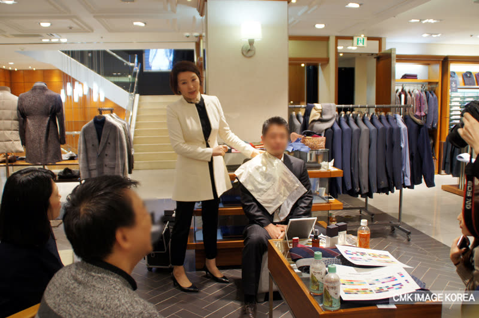
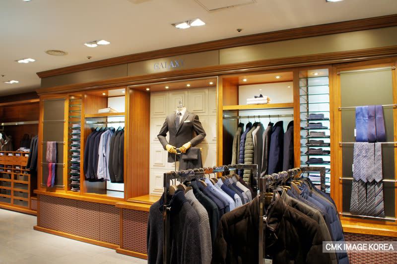
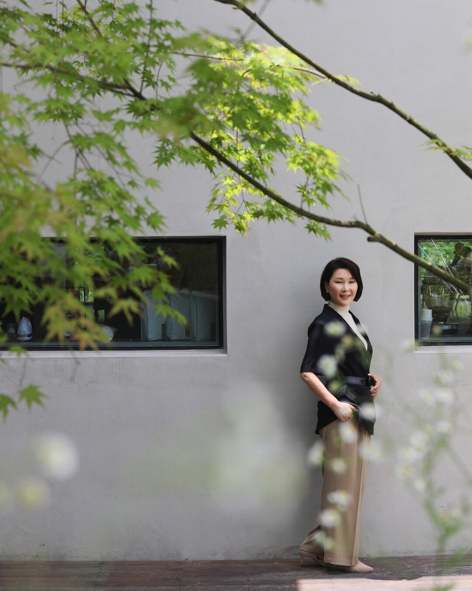

이미지는 태도이자 전략입니다.
CMK Image Korea는 25여 년간 축적한 현장 노하우로 한 사람과 조직의 인상을 신뢰의 자산으로 설계합니다.


25여 년간의 현장 컨설팅을 바탕으로, CMK Image Korea는 기업·금융·공공기관 리더의 이미지를 하나의 전략으로 설계합니다.
25여 년간 축적된 노하우로, 개인과 조직의 인상을 신뢰의 자산으로 만듭니다.
색채·심리·비언어 커뮤니케이션을 결합한 진단 체계로, 보여지는 인상과 전달하려는 정체성을 일치시키는 것을 지향합니다.
한 사람과 조직의 인상을 하나의 브랜드처럼 기획하고 설계합니다.
리더 개개인의 강점에 맞춘 1:1 맞춤 컨설팅으로 진행합니다.
인상을 신뢰로 바꾸는 언어와 태도를 함께 완성합니다.
대한민국 대표 이미지컨설턴트.
방송·기업·기관 강연과 미디어 활동을 통해 이미지 컨설팅의 대중화를 이끌어 왔으며, 색채·스타일·커뮤니케이션을 아우르는 통합 이미지 전략을 정립했습니다.
미디어 · 활동 보기